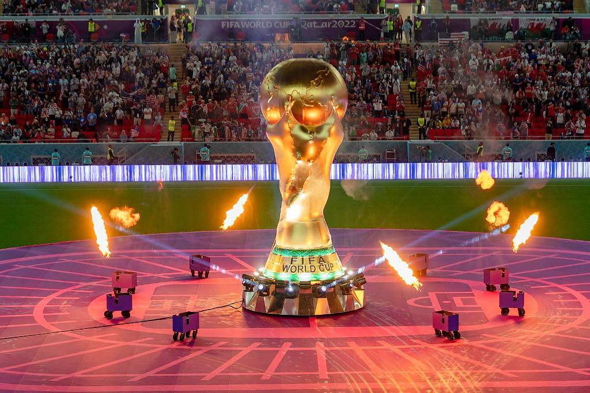
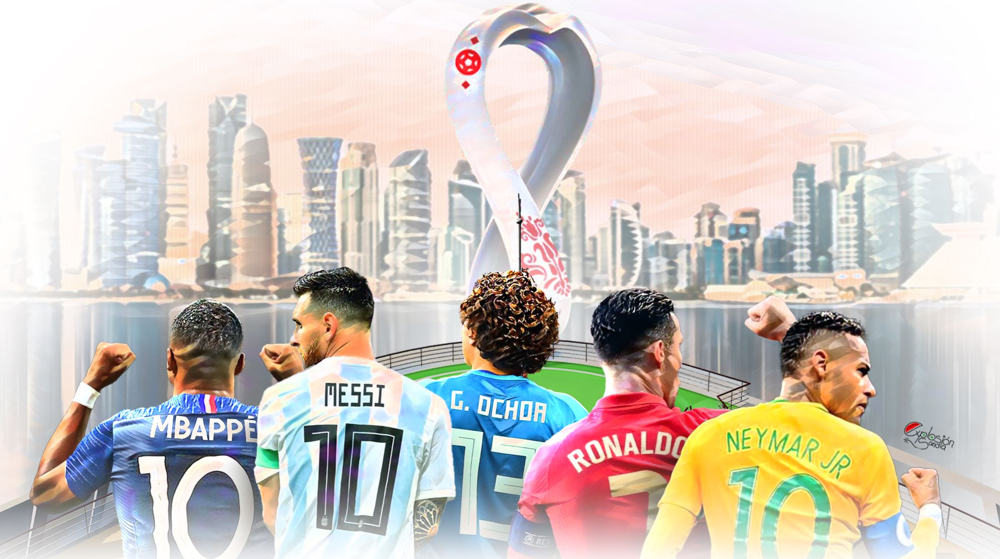
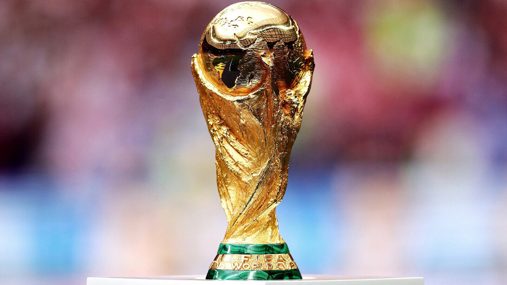
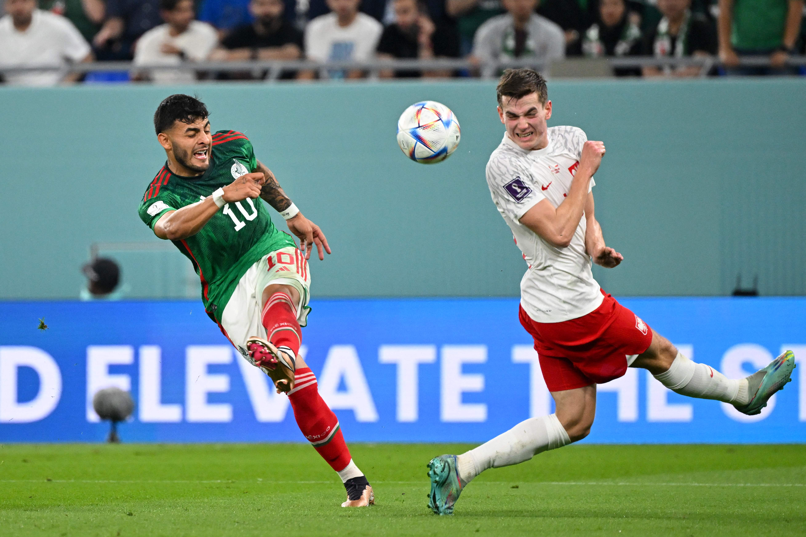
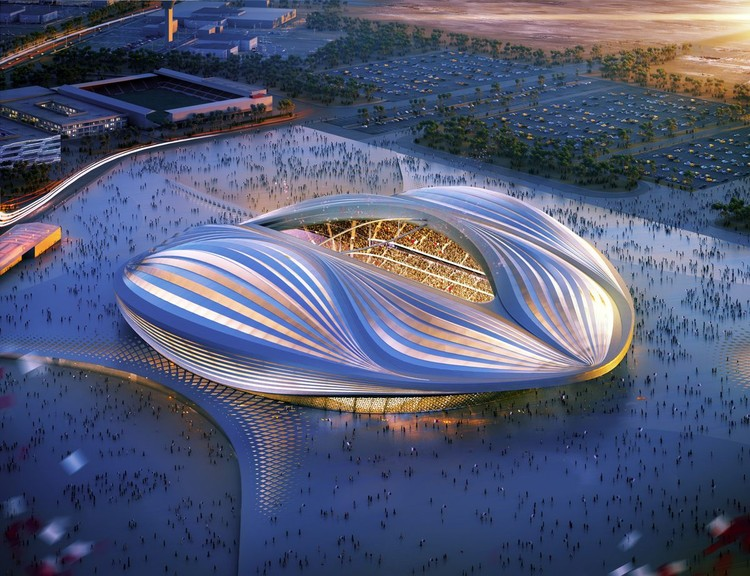
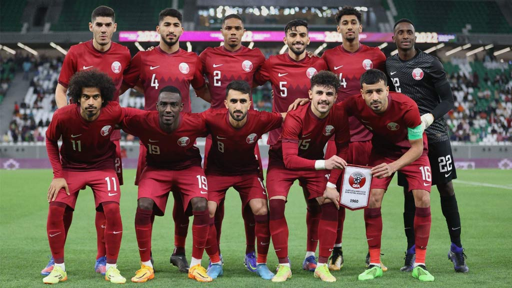

Mundial 2022 – Qatar
Sede: Qatar
Argentina se consagró campeona del mundo tras vencer a Francia en una final histórica,
con Lionel Messi liderando al equipo en un torneo memorable.
Fase Final
Argentina 3 - 0 Croacia
Francia 2 - 0 Marruecos
Argentina 3 (4) - (2) 3 Francia
Estadísticas del torneo
Galería






Ver más imágenes ↓